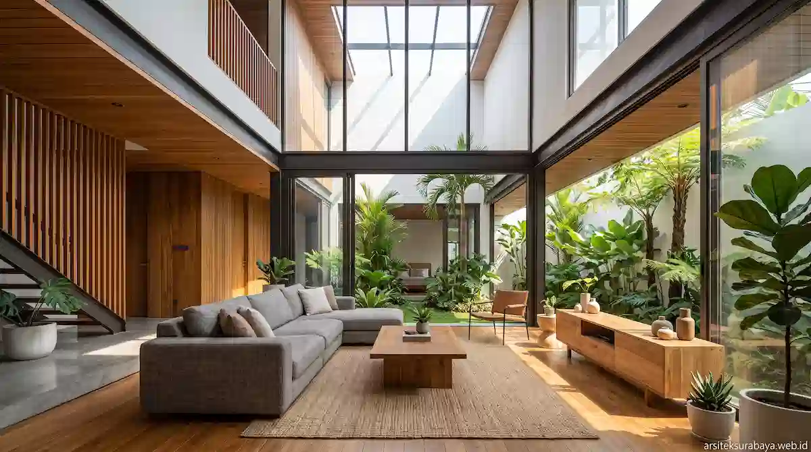

1. Menghadapi Karakteristik Iklim Tropis Surabaya
Surabaya dikenal sebagai kota pesisir dengan tingkat radiasi matahari tinggi dan suhu rata-rata yang relatif hangat sepanjang tahun. Kondisi cuaca ini menuntut pendekatan arsitektur khusus agar ruangan di dalam rumah tidak menyimpan panas berlebih. Tanpa penanganan desain pasif yang tepat, pemilik rumah sering kali bergantung secara berlebihan pada pendingin ruangan (AC), yang berdampak pada lonjakan konsumsi energi listrik.
Selain tantangan terik matahari, tingkat kelembapan udara di Surabaya juga memicu masalah keawetan bangunan jika material yang digunakan kurang tepat. Oleh sebab itu, tim Arsitek Surabaya Studio menekankan pentingnya mengintegrasikan prinsip arsitektur tropis pasif ke dalam gaya modern yang bersih dan fungsional. Langkah ini bertujuan untuk menciptakan ruang tinggal yang sejuk secara alami, terang tanpa terik, dan tahan lama.
2. Wilayah Potensial Layanan Arsitek di Surabaya
Permintaan akan perancangan rumah tropis modern terus mengalami peningkatan di berbagai sudut Kota Pahlawan. Penggunaan platform digital melalui situs arsiteksurabaya.web.id mempermudah koordinasi dan konsultasi bagi pemilik lahan di area-area strategis berikut:
- Surabaya Barat (Citraland, Graha Famili, Pakuwon Indah, & Wiyung): Kawasan perumahan berskala besar dengan lahan fleksibel yang sangat ideal untuk penerapan rumah ber-konsep resort tropis, dilengkapi area terbuka hijau dan inner courtyard.
- Surabaya Timur (MERR, Sukolilo, Gubeng, & Dharmahusada): Area padat berkembang dengan akses komersial tinggi. Penataan tata ruang pada kaveling hook maupun lahan terbatas memerlukan pengolahan fasad dan ventilasi vertikal agar pasokan udara tetap segar.
- Surabaya Selatan (Ketintang, Gayungsari, & Wonocolo): Kawasan hunian yang membutuhkan pembaruan struktur rumah lama menjadi rumah tumbuh modern yang sehat dan memiliki drainase internal yang teratur.
3. Prinsip Utama Perancangan Rumah Tropis Modern
Mengabungkan estetika modern dengan fungsi tropis membutuhkan pengolahan elemen arsitektur yang terukur. Beberapa prinsip utama yang diterapkan meliputi:
- Atap Miring dengan Teritisan Lebar: Kemiringan atap yang ideal mempercepat aliran air hujan, sementara teritisan lebar melindungi dinding luar dari cipratan air dan panas radiasi langsung.
- Penggunaan Secondary Skin: Kisi-kisi kayu, roster semen, atau pannel aluminium perforasi pada bagian fasad berfungsi membiaskan cahaya terik tanpa mereduksi masuknya sinar matahari alami.
- Void Interior Tinggi: Langit-langit yang tinggi memfasilitasi terjadinya proses konveksi alami, di mana udara panas terdorong ke atas dan keluar melalui bukaan atas.

4. Optimalisasi Ventilasi Silang & Pencahayaan Alami
Sistem ventilasi silang bekerja dengan memanfaatkan perbedaan tekanan udara pada dua sisi bangunan yang berhadapan. Dengan menempatkan bukaan jendela atau kisi-kisi pada area masukan (inlet) dan keluaran (outlet) yang sejajar maupun bertingkat, aliran angin dapat bergerak bebas melintasi ruang utama.
Pencahayaan alami dikelola dengan merancang kisi-kisi skylight dan bukaan kaca berukuran besar yang menghadap ke arah utara atau selatan. Orientasi ini meminimalkan paparan langsung sinar matahari dari barat dan timur yang membawa radiasi panas paling tinggi, sehingga interior tetap terang benderang sepanjang hari tanpa perlu menggunakan lampu di siang hari.
5. Pemilihan Material Bangunan Tahan Kelembapan
Durabilitas bahan bangunan merupakan faktor krusial untuk menjaga nilai investasi properti. Untuk area luar ruangan yang terpapar langsung hujan dan terik, kami menyarankan beberapa pilihan material utama:
- Kusen Aluminium & UPVC: Tahan terhadap muai-susut akibat perubahan suhu ekstrem dan tidak mudah lapuk oleh kelembapan udara.
- Cat Dinding Weatherproof Exterior: Lapisan pelindung elastis yang mencegah timbulnya retak rambut dan kapilaritas air pada permukaan dinding luar.
- Batu Alam & Granit Homogeneous Tile: Memiliki daya serap air yang sangat rendah sehingga lebih tahan terhadap pertumbuhan lumut maupun jamur.
6. Layanan Perancangan Arsitektur Surabaya Studio
Mengembangkan rumah tinggal impian di Surabaya memerlukan koordinasi yang matang antara aspek teknis, tata ruang, dan penganggaran. Tim Arsitek Surabaya Studio hadir memberikan pendampingan secara terstruktur mulai dari konsep awal hingga pengawasan tahap konstruksi.
Layanan kami mencakup pembuatan konsep denah 2D, gambar visualisasi 3D photorealistic, Detail Engineering Design (DED) lengkap, perhitungan Rencana Anggaran Biaya (RAB) yang transparan, hingga bantuan dokumen Persetujuan Bangunan Gedung (PBG) untuk wilayah Kota Surabaya.
Kesimpulan
Merancang rumah tropis modern di Surabaya adalah langkah tepat untuk menciptakan tempat tinggal yang nyaman, sejuk, dan sehat bagi seluruh anggota keluarga. Melalui penerapan ventilasi silang yang efektif, pencahayaan alami yang terukur, serta pemilihan material tahan cuaca, hunian Anda tidak hanya tampil elegan dan modern, tetapi juga efisien dalam penggunaan energi harian.